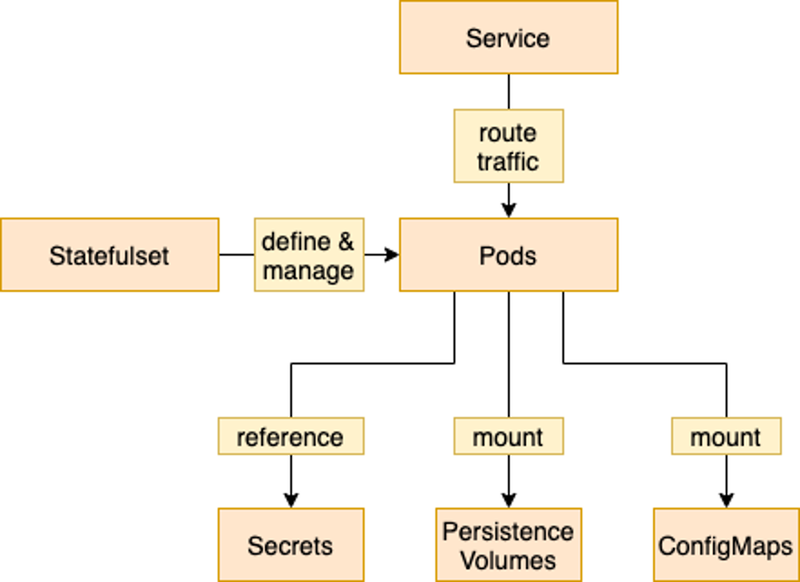

Containers overview
This topic provides administrators with a high-level overview and important prerequisite guidance to help them prepare container environments for later deployments of the HCL Digital Experience 9.5 Kubernetes and OpenShift deployment capabilities using Helm.
Beginning with HCL Digital Experience 9.5 Container Update CF196, administrators can deploy HCL DX 9.5 CF196 and later images to supported container platforms by using Helm charts. A Helm chart deployment provides administrators a larger degree of transparency in deployment operations than the operator-based deployment, which is also available by using the HCL DX dxctl process.
Overview
Helm is a software package manager that simplifies deployment of applications and services to Red Hat OpenShift and Kubernetes container platforms.
Helm is a tool for managing Kubernetes applications and deployments. Helm helps you package all required resource definitions into a single package, called a Helm chart. The Helm charts provide a convenient way to define application deployments with a predefined set of configurable items. Furthermore, Helm charts are written with declarative definitions, applying yaml structures and go templates. This approach provides administrators with transparency about the operations the Helm chart performs during the DX 9.5 container deployment.
In addition to foundation packaging and installation capabilities, you can also use Helm to modify and upgrade existing deployments, if the Helm charts are built to support these actions. Configuration changes and application upgrades can both be managed by using Helm.
For more information about Helm, refer to documentation about Helm for Red Hat container platforms: Red Hat OpenShift and Kubernetes.
Helm chart contents
The HCL Digital Experience 9.5 Deployment Helm chart (Helm chart name: hcl-dx-deployment) follows standard Helm structures and guidelines.
hcl-dx-deployment/
templates/ # The directory containing all Helm templates for e.g. Kubernetes resources
value-samples/ # Contains sample value files for different types of deployments
README.md # README with information on Helm Chart usage and references to further documentation
values.yaml # Default chart configuration values
values.schema.json # Defines the validation schema for values.yaml
Chart.yaml # The Chart yaml file containing chart specific information
- templates: The
templatesdirectory contains all resource definitions, for example, services and pods. - values.yaml: The
values.yamlfile contains all default values for a deployment. You can customize the deployment by overwriting the default values of thevalues.yamlfile. - values.schema.json: To validate the values entered for a deployment, the
values.schema.jsonfile provides a configuration whenever an installation or upgrade is performed with Helm.
Helm deployment flow
The flow chart shows that when you install or upgrade, the Helm chart reads the values.yaml file (and overridden values, either provided through Helm CLI parameters or additional values files). Then, the Helm chart validates the schema. After the schema is validated positively, Helm runs the templating engine to create the Kubernetes resource definitions from the templates in the Helm charts.
Finally, Helm accesses the Kubernetes or OpenShift Cluster and creates the resulting Kubernetes resources in the specified namespace.
Deployment structure
Basics per application structure
Each deployed application has a similar deployment structure and use a common set of OpenShift or Kubernetes resources that follow naming conventions. Some of the DX 9.5 applications might have a different setup because of their special requirements, for example, the Digital Asset Management component and its persistence definitions.
Stateful applications

DX 9.5 container applications are managed by a StatefulSet, which controls the creation and lifecycle of all pods it is responsible for. These pods store their application in persistent volumes. They use ConfigMaps to adjust application configuration and Secrets to access credentials.
Before all pods is a service that manages routing traffic to the Pods. This Service is also called HAProxy. The service fulfills incoming requests from outside the Kubernetes or OpenShift cluster.
Stateless applications: Services management

HAProxy and routing
To access applications from the outside, DX deploys a reverse proxy in the form of an HAProxy. This reverse proxy routes the incoming requests to all application services, which then distributes the requests to the corresponding pods hosting the applications.
HAProxy uses its configuration to select which request is mapped to which application in the DX 9.5 deployment (back-end). When requests are initiated from outside the Kubernetes or OpenShift cluster, HAProxy tries to fulfill those requests by using the configured routing. If it finds a matching endpoint, it forwards the request to the corresponding service, which then forwards the same request to a Pod that is ready to fulfill the request.
- DX 9.5 Core Interactions with Kubernetes
Find more detailed information about how the Digital Experience 9.5 core container interacts with Kubernetes. Understanding this information might assist you in interpreting observed behavior or in troubleshooting your HCL DX 9.5 container deployments in Helm. - Deploying DX 9.5 applications to container platforms using Helm
See a list of all DX applications and resource definitions that configure the application runtime and are deployed to containers by using Helm on OpenShift or Kubernetes platforms. As outlined in the overview, applications can also include ConfigMaps, Secrets, and Ingress. - PersistentVolumes and related operations considerations
Get details that cover PersistentVolumes (PVs) and related operations considerations in storing data for DX 9.5 stateful applications. - Configuring DX 9.5 deployments to container platforms using Helm
Get details about the configuration structure in the HCL Digital Experience 9.5 OpenShift and Kubernetes deployment with Helm. - Scaling DX 9.5 container deployments using Helm
Review information about applying container scaling capabilities and how scaling resources are handled in the HCL DX 9.5 deployment using Helm. Refer toHorizontalPodAutoscalerdetails in Kubernetes and Red Hat OpenShift documentation for more information on these services. - Digital Asset Management persistence architecture
Learn about the components of the Digital Asset Management persistence. The updated DAM persistence feature is available from HCL Digital Experience 9.5 Container Update CF198 and later. - Web content AI analysis
Learn how to configure the AI analysis feature for WCM Content in Kubernetes deployment.